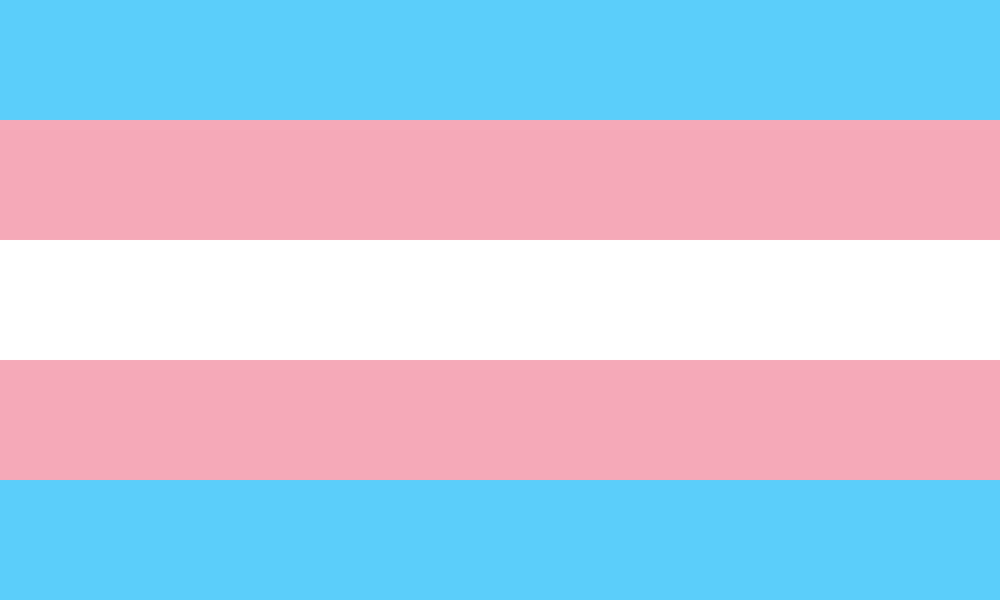

¿Qué es ser transexual?
Las personas transexuales tienen una identidad de género que no coincide con su sexo y pueden desear hacer una transición permanente al sexo con el que se identifican, por lo que suelen buscar asistencia médica (incluidas las terapias de reasignación de sexo, como la terapia de sustitución hormonal y la cirugía de reasignación de sexo) para ayudarles a alinear lo que la sociedad cree que debe ser un hombre o una mujer.La transexualidad es un subconjunto del conjunto transgénero, pero algunas personas transexuales rechazan el término transgénero, al que consideran una etiqueta.
(Haz click en la imagen para obtener más información)
